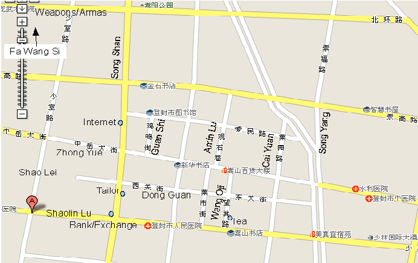

| Home Page | Photos from Fa Wang | Videos of Forms | Anotated Deng Feng Map |
Fa Wang Si (Fa Wan Shay) is a Buddhist temple in Deng Feng Henan China. It is also a Shaolin Kung Fu training centre with the best Shaolin monks within its ranks. It is about 15 kilometers from the famous Shaolin Si, the birth place of Shaolin Kung Fu, which is now mainly a museum. I spent the month of August 2008 living and training in Fa Wang Si with five other students from the Wu Xing school in Madrid, They were Javi, Dani, Julia, Adolfo and Lucia. These are some thoughts on the month.
The day starts at about 4 or 4:10 am with a mild tooting sound like some bird ushering in the day. This is in fact a monk who walks through the temple tapping a piece of bamboo on a rope with a mallet. He walks the temple top to bottom tapping the bamboo as a call to prayer for the religious monks. This happens at various periods throughout the day and in a quiet moment one can here the same sound from the neighbouring Song Yue temple. The Buddhist monks all have six little circle on their heads in two parallel lines of three from back to front on the cranium. We are of course with the warrior monks - they pray less and train Kung Fu more!
In the darkness some morning another knocking sound can be heard which is the sound of chopping coming from the kitchen at the other side of the courtyard. Around 4:20am a whistle blows - this is for the Shaolin training. Activity can be heard outside but it is a quiet muffled activity, The thud of the gate opening can be heard in the court yard - it is too dark to see much. The temple bell chimes slowly and at 4:30 the whistle blows again everyone forms into their groups in the courtyard and salutes their teacher (Lao Tsi) there are shouts of Amitabha and Lao Tsi Hao - then the groups move off to run. There are no belts in Kung Fu. We all wear the same orange robes, white gaiters and black belts the newest arrival and the oldest student precisely the same. The teachers wear a more brown robe which distinguishes them. The temple monks wear dark brown robes for ceremonies but wear similar robes to the teachers at other times or grey blue robes. We also form up to salute the teacher "Amitabha" bow "Lao Tsi Hao". We walk down the steps out of the temple in the dark and do a little loosening of joints before running until Tang Lao Tsi says turn around. Sometimes we do pressups and leg exercises on the arch at the roundabout perhaps a kilometer or two from the temple before returning. Then we practise our forms in the first courtyard where our lodgings and dining rooms are. We finish by six am when the sun is up. In between the mosquitoes wake up too and have a good go at us about dawn.
After the students move off drums can be heard - they are much louder than the bell. The drums beat at various rhythms for about ten minutes. These can be heard at various times during the day and occasionally there is a flutist playing in the top temple. The drum is also notable after the whistle for bed time. Monks chanting may also be heard sometimes. Breakfast is at 6:30 or 7am. The Europeans do not have to join the Chinese queue for food. Our dishes are delivered in large bowls to our dinning area where we help ourselves. There are usually three or four dishes and some are quite spicy which is nice. There is usually rice but occasionally noodles there are almost always white rice buns. Breakfast is vegetarian while there is usually one meat dish for the other two meals - the main meal seems to be Lunch as most food is brought then and less in the morning and evening - there is always more than enough for us. The cook is northern Chinese (he looks almost Indian) and does not wear monks robes - hence presumably he is just a cook. Perhaps this is why the food is reported to be much better than last year and is nice and spicy.
After breakfast training is at 8:00am then we usually go up into the temple and train on one of the higher terraces. Normally the second one with the two large trees ( reputedly planted when the temple was built in 71 AD) to shade us. First class is physical and stretching. Stretching is assisted by Tang pulling feet out or forward or pushing us down further. Second class at 9:40 or 10am we practise our forms. Shifu Carlos (our teacher in Madrid) sent a letter saying which forms he wanted us to master two forms each means we have little time for anything else in a month.
Lunch is around 11:30 am. After lunch (and after breakfast) there is cleaning time. The Shaolin are fastidious cleaners (except for the toilets !) even the mud/dirt parts of the garden are swept every day. All stone surfaces are mopped (interior and exterior). Still they consider the ground dirty and always wear shoes, including during training. Then there is a break until 15:30. Usually everyone sleeps at least one hour. Afternoon classes are like the morning - physical training followed by forms.
One afternoon Da Shifu (The head Monk) took our lesson. He moves incredibly well and made us stretch further and helped us with our forms. Da Shifu was a central figure in a National Geographic program about Kung Fu about ten years ago.
Dinner is about 18:30 and we have a couple of hours free after that. After dinner most of the Chinese students have another class which we do not have. Sitting reading or typing in my room I can hear weapons clanking and rustling (chain) in the courtyard. So if our day seems long their's is longer.
Bed time is 21:00. Crickets sing outside all night. They are drowned out in the day by the cicadas - especially when the sun shines. Some of the cicadas sound like table saws cutting planks of wood they are much louder than the cicadas in Madrid.
The climate here is perfect for training - it does not seem to go over thirty and stays about twenty six most of the time. There is the occasional downpour which stops training but this only happened twice in August. It is very green and lush - the temple is literally in the Jungle. This also means there are pretty large insects about and lots of mosquitoes. Within the temple they spray about once a week - presumably for mosquitoes.
Things are getting easier here apparently, since last year there is a shower with hot water which actually works sometimes - not the day we arrived but the next at least. We also have our own rooms - a little crumbling but with a roof to keep the rain off a desk a fan and of course a wooden frame which is the bed. After nearly 24 hours traveling and a few more without sleep it is surprising how comfortable a flat wooden surface is to sleep on - the sleeping bag I bought with me of course helped a little- but very little. After the end of the first days training this plank was luxurious and provided for instant sleep without even noticing it was hard. After a month one fears the soft bed at home will be simply too soft.
Fa Wang Si is a working temple with about thirty religious monks and probably as many warrior monks. Because its a working temple Chinese people come to make offerings and generally hang out on the terrace where we usually train. They seem to find the European Kung Fu students a novelty - many stop at stare for quite some time as if trying to reconcile their location, the actions, the orange robes and the occidental faces. It seems offerings of fire crackers are also normal so at any time during the day fire crackers may go off - some of them quite impressive - loud enough to set off the car alarm on one of the few nearby cars outside the temple wall. August 30th is Buddha's birthday (one of them anyway) and a huge festival here in the temple people started arriving five days before and decorating the place with ribbons and flags. More and more people came each day and we had to train in other places like Song Yue since there were simply too many people already on the terrace where we usually trained.
The temple is enormous with many terraces perhaps half a kilometer bottom to top we are in the Secular Shaolin Quarters near the main gate. The temple is oriented north south with the main gate in the south. The six of us and one Mexican who is here have about as much space as most of the the Chinese secular students who are in bunks in a large hall, there could be forty of them or so. Behind their hall is a barracks like ours where the kitchen is and some of the monks quarters. They have no shower and the toilet is upstairs beside where our showers are. We were welcomed on Sunday by master Wong who gave us water melon and had us shown to our rooms. The Chinese students also have to shave their heads and look like monks even if they are just here for the summer - we do not have to shave our heads although Dani, Javi and Adolfo did. Some of these students may become monks but others are going to university - we met "Harry" who is studying medicine (second year) but is here for Kung Fu. Cindy and Helen are also in school in Deng Feng and just here for the summer. They all speak some English but with strong accents. Some evenings are spent exchanging English correction for Chinese lessons.
Here routine is everything and it is regulated by the whistle first toot get dressed next one form up, or at meal times the whistle means grab your bowl, chopsticks and cup and go to the dinning room to eat. There is a whistle to finish eating and clean up, another for going to bed. Practically no need for a watch is you can remember which part of the day it is and if you can dress in ten minutes ! At least sometimes we suspect we are short changed on the ten minutes as none of us manged to get dressed between whistles while other times there is time to spare. Presumably the whistle blower also has no watch. Plenty of mobile phones hanging about though.
Of course we are not used to this level of exercises. After the first week practically all had some minor injury. I hurt my heel in the second week and pulled my left hamstring. Still the training continues - there is time to heal when we are home.
William O'Mullane
